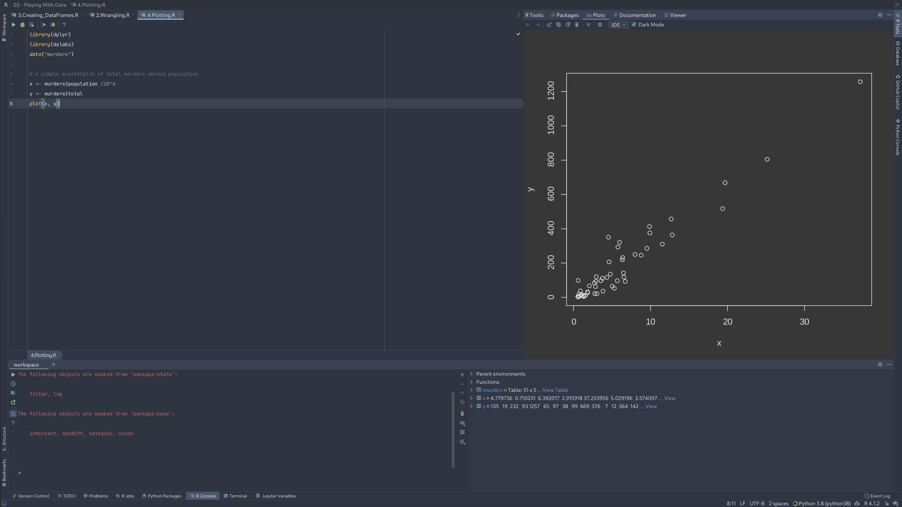
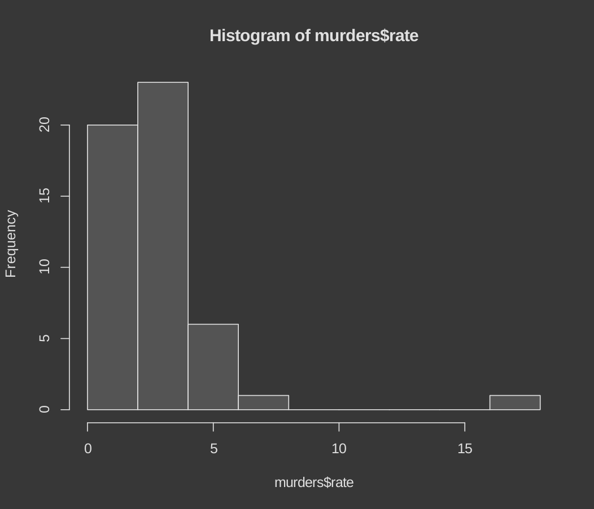
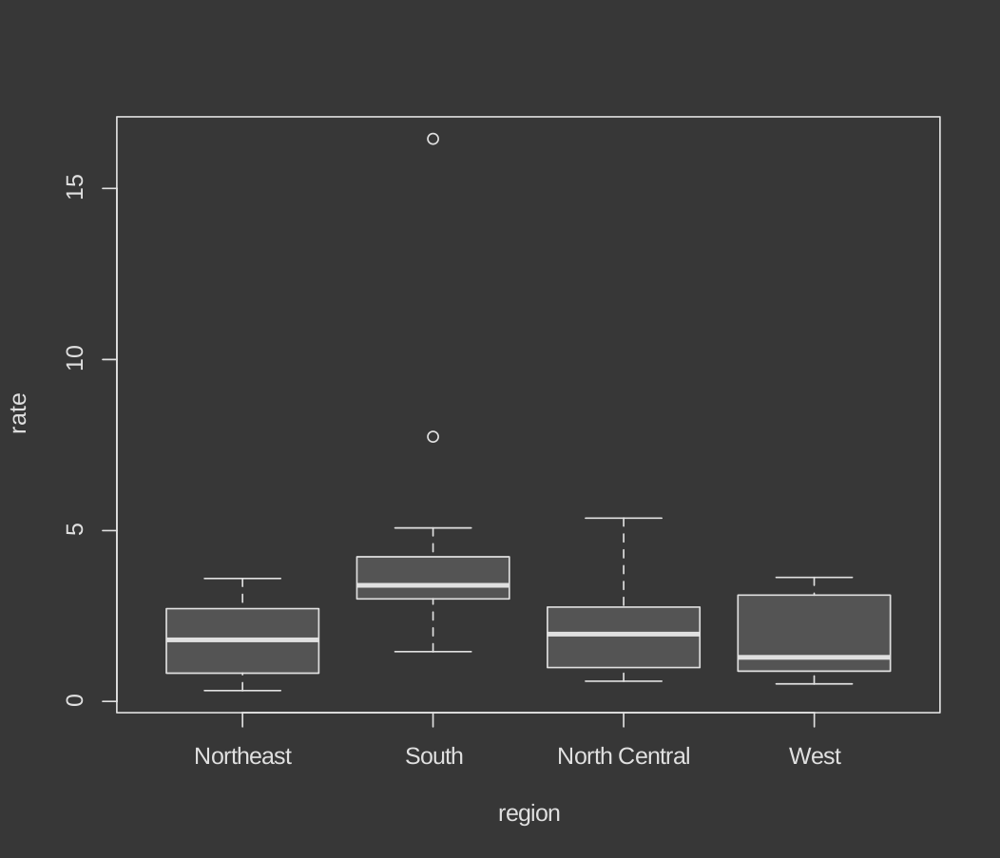

Index
Indexing in R
R has powerful tools to perform indexing.
We will see an example, on how easy it is to filter out states with certain thresholds of murder rate.
Note: In R, vectors can be indexed with logicals. This means, when an index says 'TRUE' the vector is indexed. We will be using this in the upcomming example
# defining murder rate as before
murder_rate <- murders$total / murders$population * 100000
# creating a logical vector that specifies if the murder rate in that state is less than or equal to 0.71
index <- murder_rate <= 0.71
# determining which states have murder rates less than or equal to 0.71
murders$state[index]
# calculating how many states have a murder rate less than or equal to 0.71
sum(index)
Some functions in indexing
We will look at 3 functions used in indexing. They are which, match, and %in%.
which() gives returns a vector, with the index value of TRUE in the input vector.
match() looks for entries in a vector and returns the index needed to access them.
index <- match(c("New York", "Florida", "Texas"), murders$state)
index
murders$state[index]
murder_rate[index]
%in% function checks if one array is the subset of another array
Data Wrangling
We will be using dplyer package here. Make sure to install them.
This packages provides some basic data manuplation functions, with easy to remember names
mutate() is used to add columns to our data set.
You can check first few rows of the data set by using head() function.
filter() is used to filter out data based on a condition.
select() is used to select a subset of data based on column names.
The pipe operator %>%
The %>% operator is used to chain together functions.
Lets see an example, where we are gonna filter out states with certain murder rate.
Creating Data Frames
Creating dataframes is straight forward in R. Look at the following example
# creating a data frame with stringAsFactors = FALSE
grades <- data.frame(names = c("John", "Juan", "Jean", "Yao"),
exam_1 = c(95, 80, 90, 85),
exam_2 = c(90, 85, 85, 90),
stringsAsFactors = FALSE)
Formerly, the data.frame() function turned characters into factors by default. To avoid this, we could utilize the stringsAsFactors argument and set it equal to false. As of R 4.0, it is no longer necessary to include the stringsAsFactors argument, because R no longer turns characters into factors by default.
Plotting
Plotting with the inbuilt function is straight forward in R. You just call the function and pass the data you want to plot.
Lets see an simple example.
library(dplyr)
library(dslabs)
data("murders")
# a simple scatterplot of total murders versus population
x <- murders$population /10^6
y <- murders$total
plot(x, y)

Similary, we can plot histogram and box plots
# a histogram of murder rates
murders <- mutate(murders, rate = total / population * 100000)
hist(murders$rate)
# boxplots of murder rates by region
boxplot(rate~region, data = murders)
Here is the histogram

Here is the box plot
